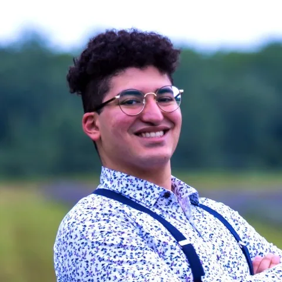

À propos de CCC StudiosAbout CCC StudiosAcerca de CCC Studios
Tout peut s'améliorer. On le prouve.Everything can be improved. We prove it.Todo se puede mejorar. Lo demostramos.
CCC Studios, c'est la Compagnie Canadienne Créative : un studio québécois mené par Dan Ortega, où la création et l'optimisation travaillent ensemble.CCC Studios is the Canadian Creative Company: a Quebec studio led by Dan Ortega, where creativity and optimization work together.CCC Studios es la Compañía Creativa Canadiense: un estudio de Quebec dirigido por Dan Ortega, donde la creatividad y la optimización trabajan juntas.
Le studioThe studioEl estudio
Deux branches, une même façon de travailler : comprendre, mesurer, puis améliorer.Two branches, one way of working: understand, measure, then improve.Dos ramas, una misma forma de trabajar: entender, medir y luego mejorar.
Qui est derrièreWho's behind itQuién está detrás

Dan Ortega
Diplômé du baccalauréat en génie industriel (BEng), programme coopératif, Université Concordia, École de génie et d'informatique Gina Cody, 2021.Industrial Engineering BEng graduate, co-op program, Concordia University, Gina Cody School of Engineering and Computer Science, 2021.Graduado del bachillerato en ingeniería industrial (BEng), programa cooperativo, Universidad Concordia, Escuela de Ingeniería e Informática Gina Cody, 2021.
Chez Airbus, il a passé trois ans à améliorer la chaîne d'assemblage final de l'A220 à Mirabel. Il applique aujourd'hui la même méthode aux entreprises d'ici : observer un processus, mesurer, retirer ce qui ne sert à rien, automatiser le reste, puis mesurer encore.At Airbus, he spent three years improving the A220 final assembly line in Mirabel. Today he brings the same method to local businesses: watch a process, measure it, remove what serves no purpose, automate the rest, then measure again.En Airbus pasó tres años mejorando la línea de ensamblaje final del A220 en Mirabel. Hoy aplica el mismo método a las empresas locales: observar un proceso, medirlo, quitar lo que no sirve, automatizar el resto y volver a medir.
Il travaille en français, en anglais et en espagnol. Sa passion pour l'aéronautique vient des Cadets de l'Air, où il a été le premier cadet commandant d'un escadron de 115 cadets.He works in French, English and Spanish. His passion for aviation comes from the Air Cadets, where he was the cadet commanding officer of a 115-cadet squadron.Trabaja en francés, inglés y español. Su pasión por la aeronáutica viene de los Cadetes del Aire, donde fue el cadete al mando de un escuadrón de 115 cadetes.
Parcours de DanDan's backgroundTrayectoria de Dan
- 2022 –CCC StudiosRecherche en IA, création et optimisationAI research, content and optimizationInvestigación en IA, creación y optimización
Personnages IA déclarés, création de contenu, outils sur mesure et optimisation pour les PME.Declared AI characters, content creation, custom tools and optimization for small businesses.Personajes IA declarados, creación de contenido, herramientas a medida y optimización para pymes.
- 2021 – 2024Airbus · MirabelGestionnaire de projets d'industrialisationIndustrialisation project managerGerente de proyectos de industrialización
Portefeuille de projets pour améliorer la chaîne d'assemblage final de l'A220, équipe de formateurs, stratégie industrielle d'un poste jusqu'à la cadence maximale.Portfolio of projects improving the A220 final assembly line, a team of trainers, industrial strategy for a workstation up to peak rate.Cartera de proyectos para mejorar la línea de ensamblaje final del A220, equipo de formadores, estrategia industrial de un puesto hasta la cadencia máxima.
- 2021Bell Flight · MirabelStagiaire en gestion de projets, qualité et sécurité des volsProject management intern, quality and flight safetyPasante en gestión de proyectos, calidad y seguridad de vuelo
Stratégies pour éliminer les risques de débris (FOD) dans l'usine.Strategies to eliminate foreign object debris (FOD) risks in the factory.Estrategias para eliminar los riesgos de objetos extraños (FOD) en la fábrica.
- 2020 – 2021Rio TintoConsultant en logistique, projet de fin d'étudesLogistics consultant, capstone projectConsultor en logística, proyecto de fin de carrera
Analyse et solutions à des problèmes de logistique.Analysis and solutions to logistics problems.Análisis y soluciones a problemas de logística.
- 2019Airbus · MirabelGestionnaire de projet junior, soutien à la clientèleJunior project manager, customer supportGerente de proyecto junior, atención al cliente
75 % des tâches d'un poste d'adjoint étudiant éliminées en retirant les étapes redondantes.75% of a student-assistant position's tasks eliminated by removing redundant steps.75 % de las tareas de un puesto de asistente estudiantil eliminadas al quitar pasos redundantes.
- 2018 – 2019IISE ConcordiaVice-président marketingVice President of MarketingVicepresidente de marketing
Marketing et réseaux sociaux de l'association étudiante en génie industriel.Marketing and social media for the industrial engineering student chapter.Marketing y redes sociales de la asociación estudiantil de ingeniería industrial.
- 2018Bombardier · Groupe VolvoAnalyste en gestion de projet · AcheteurProject management analyst · BuyerAnalista en gestión de proyectos · Comprador
Suivi de projets, appels d'offres et analyses pour la prise de décision.Project tracking, requests for quotation and analyses for decision-making.Seguimiento de proyectos, licitaciones y análisis para la toma de decisiones.
- 2016 – 2018Revenu QuébecAnalyste financier étudiantStudent financial analystAnalista financiero estudiantil
Macros Excel (VBA) qui ont réduit de 50 % le temps passé sur des tâches répétitives.Excel (VBA) macros that cut time on repetitive tasks by 50%.Macros de Excel (VBA) que redujeron en 50 % el tiempo en tareas repetitivas.
Notre méthode, de l'usine au bureauOur method, from factory to officeNuestro método, de la fábrica a la oficina
- ObserverObserveObservarOn regarde comment le travail se fait vraiment, pas comment il devrait se faire.We look at how the work really gets done, not how it should.Miramos cómo se hace realmente el trabajo, no cómo debería hacerse.
- MesurerMeasureMedirLe temps, les erreurs, les délais : un point de départ honnête.Time, errors, delays: an honest starting point.El tiempo, los errores, los plazos: un punto de partida honesto.
- SimplifierSimplifySimplificarOn retire les étapes qui ne servent à rien avant d'ajouter un outil.We remove the steps that serve no purpose before adding any tool.Quitamos los pasos que no sirven antes de agregar una herramienta.
- Outiller, puis mesurer encoreEquip, then measure againEquipar y volver a medirL'IA et l'automatisation font le reste, et les chiffres disent si ça marche.AI and automation do the rest, and the numbers tell whether it works.La IA y la automatización hacen el resto, y las cifras dicen si funciona.
Travaillons ensembleLet's work togetherTrabajemos juntos
Pour un projet d'affaires, commencez par l'audit express gratuit. Pour tout le reste, écrivez-nous.For a business project, start with the free express audit. For anything else, write to us.Para un proyecto de negocios, empiece con la auditoría exprés gratuita. Para todo lo demás, escríbanos.